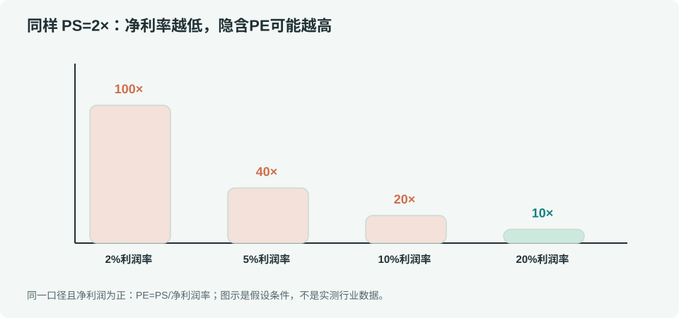

CHAPTER 10 · FINANCIAL VALUATION
相对估值下：PS、EV/EBITDA、DDM与退出倍数
由估值对象而非倍数流行程度选择工具；解释利润率、资本支出与终值方法对结果的影响。
亏损企业能否估值？可以，但不能因此忽略成本
当某家公司净利润为负时，传统正PE比较失去意义；销售收入、经营资产或未来现金流仍可用于分析。但用PS或EV/EBITDA并不是“绕开盈利问题”的魔法：它们把盈利可持续性、费用与资本需求放到后续环节核对。
学习顺序应从估值对象出发：股权市值对股东收益或股东销售收入，经营企业价值EV对经营收益指标。将两种口径混用，倍数会看似合理却没有会计意义。
PS看收入，不代表利润有多厚
市销率PS是股权市值除以相同口径收入。亏损公司仍可有正收入，因此PS可以计算；但收入质量、毛利率、获客成本、资本开支和稀释是决定长期价值的关键。

举例：相同PS=2倍，净利润率2%时PE=100倍；净利率10%时PE=20倍。这表明PS相同并不能说明两家公司的估值相似，尤其要核对其费用结构与增长需要的再投资。
EV/EBITDA：企业价值和经营分母要一致
企业价值EV在基本口径下约等于普通股市值＋有息债务−可调整现金。根据企业情况需加入少数股权、优先股及其他调整，处理经营必需现金和租赁义务。EBITDA是税息折旧摊销前利润，通常从经营收益调整而来；这不是自由现金流。

EBITDA较适合辅助观察不同资本结构的经营资产，但当两家公司维持设备所需资本开支相差很大，使用同样EV/EBITDA也可能高估其中一家。还要检验租赁会计、并购调整、经营亏损和少数股东权益。
DDM股利折现：分红是现金，但支付条件有限制
股利折现模型DDM从股东预计获得的未来股利出发。在一阶段恒定增长的Gordon模型中，下一年股利D1=5元、Ke=10%、长期增长g=4%，得到每股83.33元。但要求Ke>g，且派息和增长路径可持续。
企业不分红不等于没有价值；股利可能低于可供股东使用的现金，也可能借债支付而不具备可持续性。因此DDM只对股利政策稳定且可推断的企业较有解释力。
退出倍数法：与永续增长终值只能择一
在DCF的显式预测期结束时，终值可以按永续增长的FCFF模型估计，也可以按终年EBITDA乘以可比市场倍数估计（退出倍数法）。二者是同一个时点价值的两种替代估计，不能相加。

构造例子：前五年FCFF每年100、WACC10%，前五年现值379.08；第5年EBITDA150、退出倍数8，则第5年末终值1200，其现值745.11，合计EV约1124.18百万元。若改用2%的永续增长法，EV约1170.75。两种方法都必须检验终值合理性，退出倍数法并不会消除对远期市场估值的依赖。
方法匹配：不要所有行业只用同一倍数
对现金流稳定可预测的经营企业可以优先用DCF，再用相对倍数核对；对账面资本有经济意义且受到监管资本约束的金融企业，PB与ROE框架有参考价值；对稳定现金分红企业，DDM可以作为股权估值视角。对亏损但存在可持续毛利的企业，PS可以辅助比较，但必须推导长期利润率与资本投入。
| 估值方法 | 分子和分母 | 必须补充的检验 |
|---|---|---|
| PS | 股权市值 / 收入 | 净利率、毛利率、再投资 |
| EV/EBITDA | 经营企业价值 / EBITDA | 资本开支、租赁、营运资本、负债口径 |
| DDM | 未来股利 / 权益资本成本 | 派息能力、可持续增长、Ke>g |
| 退出倍数DCF | 预测期FCFF＋终期退出EV现值 | 倍数来源、终年利润、折现率 |
| FCFF DCF | 企业自由现金流 / WACC | 增长资本需求、终值与股权价值桥接 |
估值报告最后必须呈现假设，而不是单一点估值
可复核的报告应同时呈现企业商业模式、利润与现金流桥接、估值口径、贴现率/倍数的选择依据、敏感性区间与主要反证。仅展示“合理目标价××元”而不披露假设，无法被读者独立复算。
检验
- 为什么两家公司PS都为2倍而PE可能分别为20和100倍？
- EV和普通股市值为何不能直接互换？
- 终值使用退出倍数后，为何不能再加一个永续增长终值？
- EBITDA为什么不能代替自由现金流？
原始资料与公式口径
下列资料用于核验估值方法。估值取决于主观假设，模型输出不能替代证券价格、尽调或风险管理。